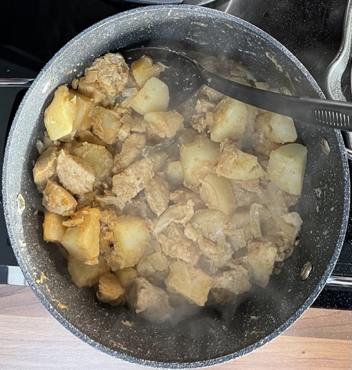

Chicken korma
Chicken
- Marinate for 1 hour
- 600g chicken breast trimmed & cubed
- juice 1 lemon
- 3 tsp garlic & ginger
- 1 tsp garam masala
- 1 tsp cumin
- 1 tsp coriander
- ½ tsp cinnamon
- ½ tsp salt
- 100g yogurt
- tandoori marinade
Curry
- Fry till light brown
- sunflower oil
- 2 onions chopped
- Add
- ½ tsp garam masala
- ½ tsp cinnamon
- ½ tsp cumin seeds
- 3 cardamom pods
- 1 bay leaf
- Add and cook for 5 mins
- Add and cook till soft
- Add to taste
Notes
- Potatoes cook in water released by the chicken
- Original recipe: Rosanna's mum
Pics
